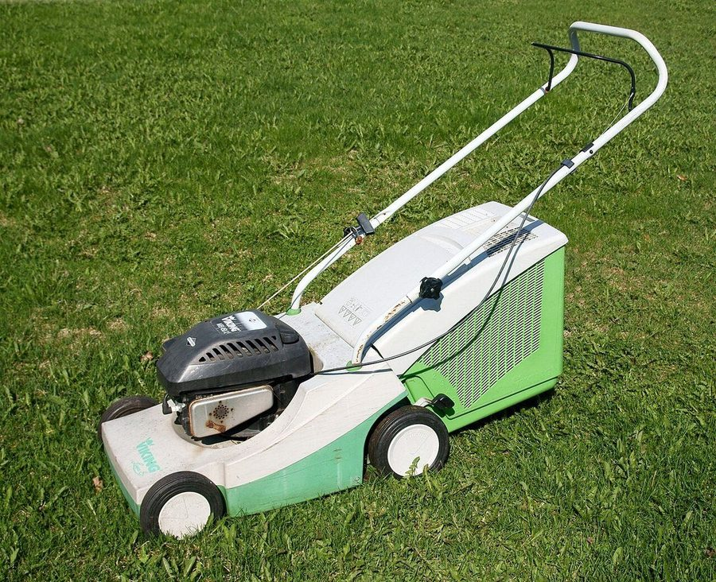
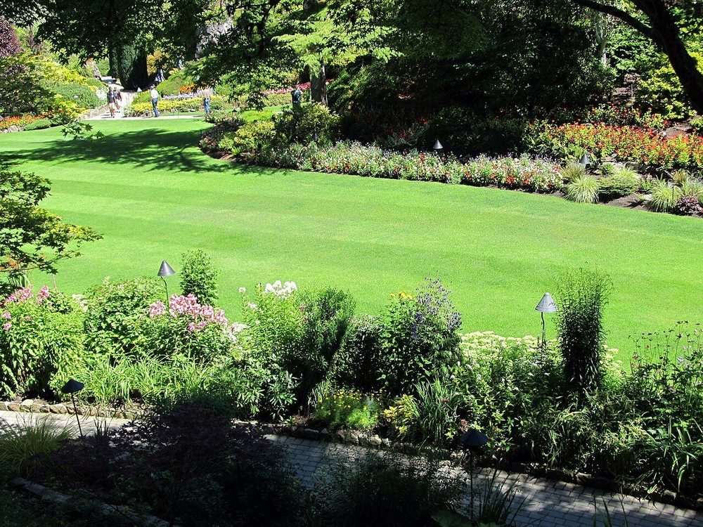
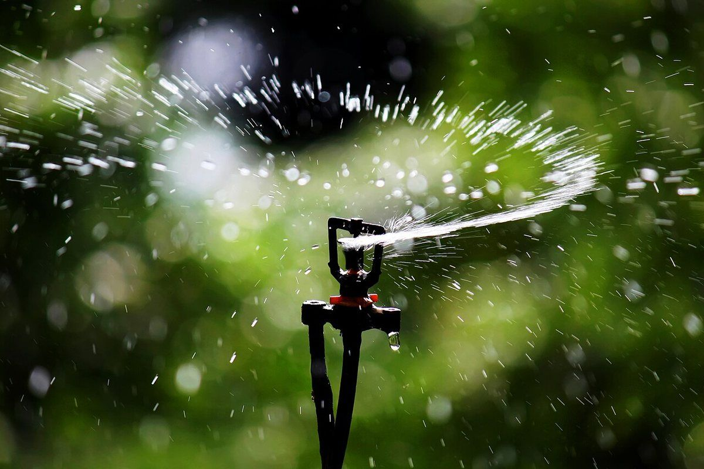
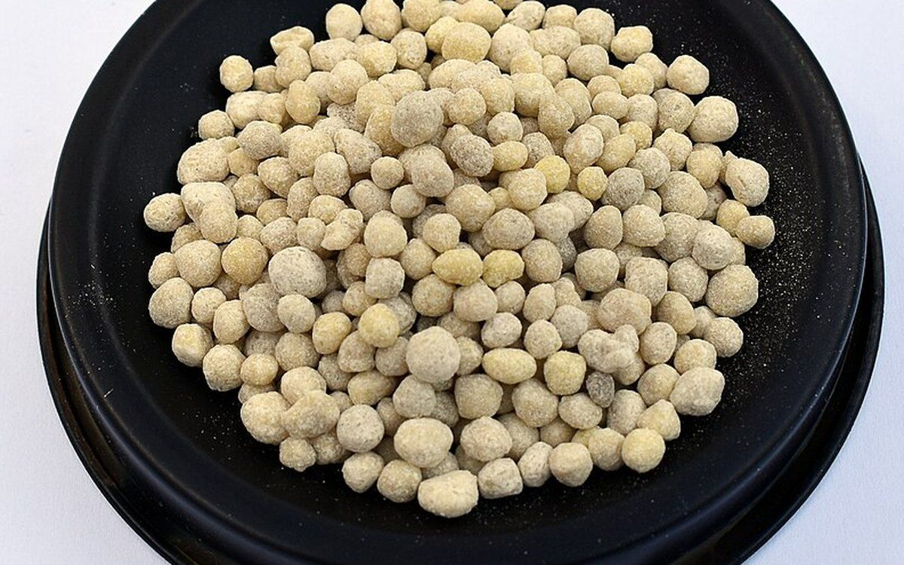
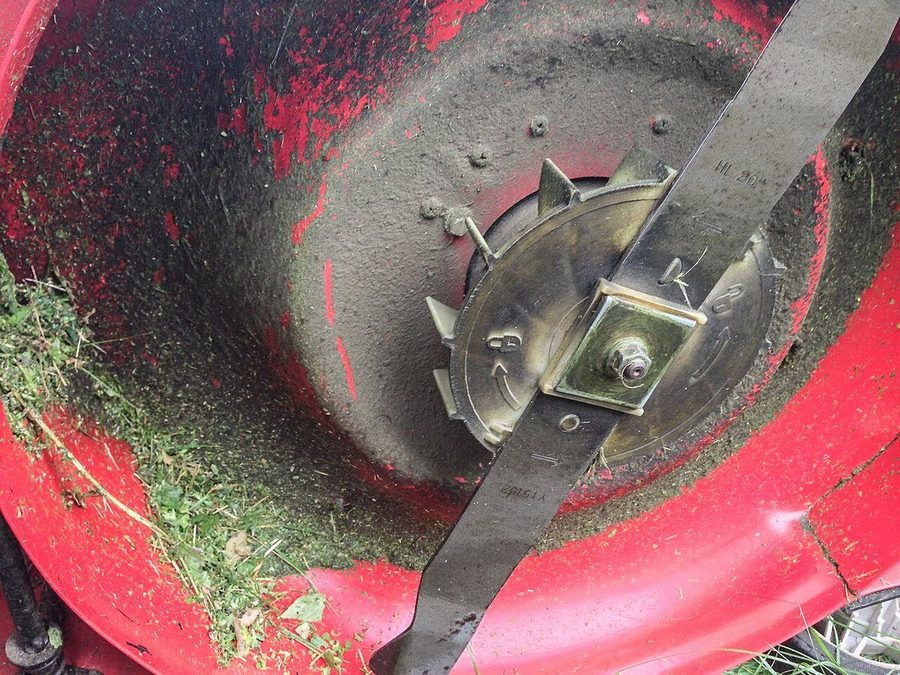
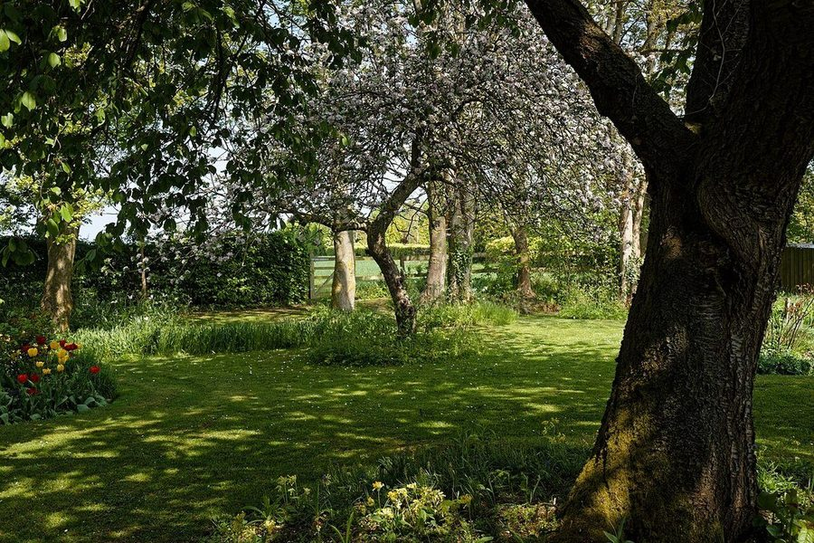
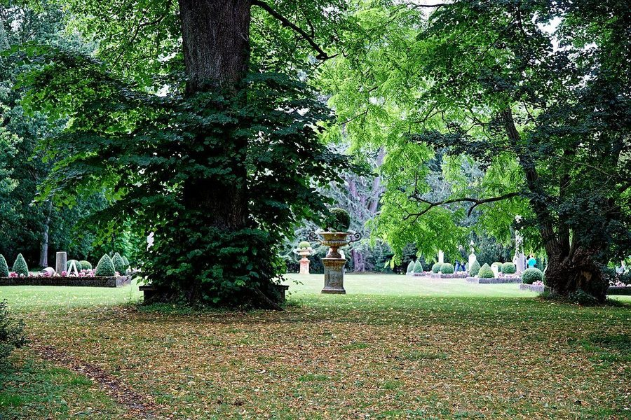
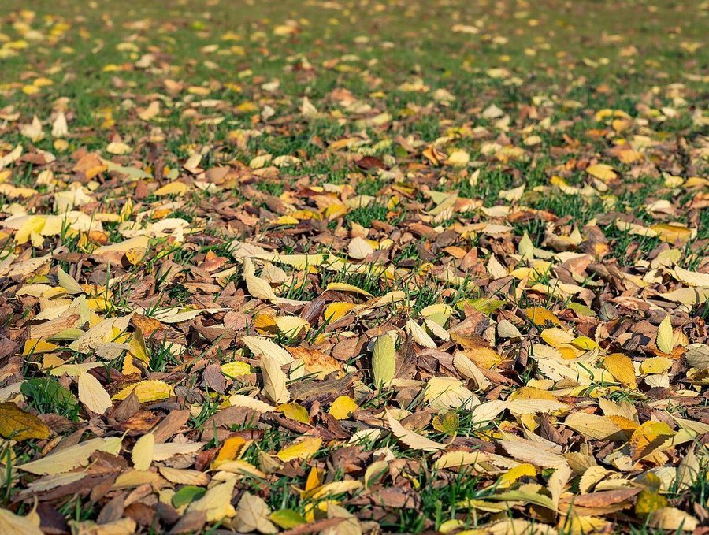
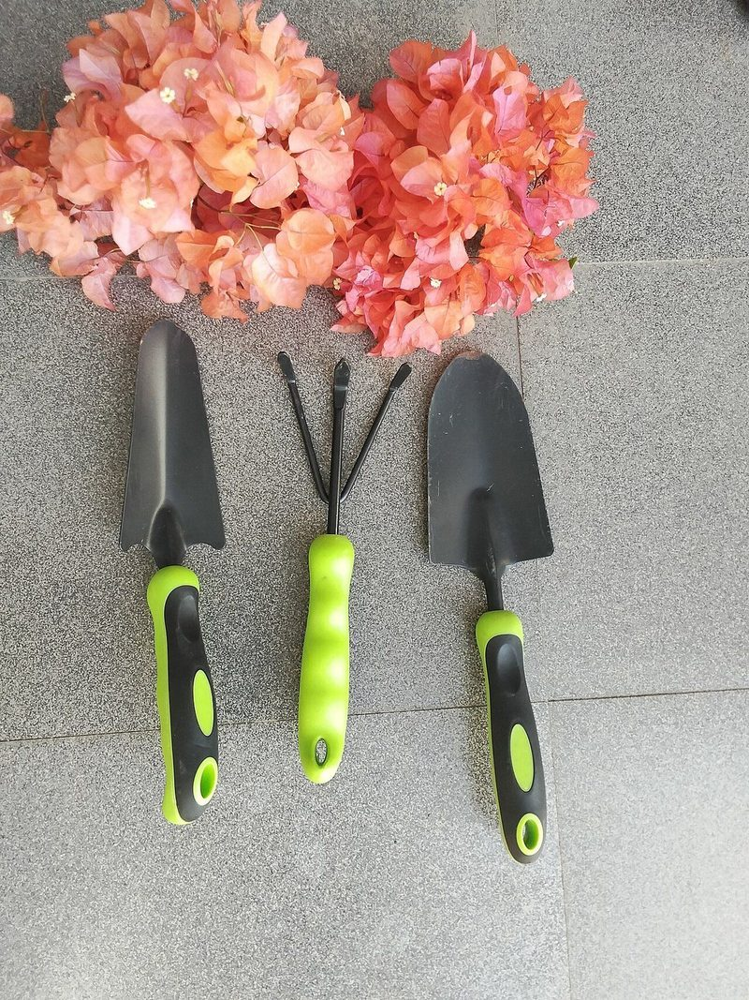

Mow high, mow often
Cut no more than a third of the blade at a time. Taller grass shades out weeds and grows deeper roots.
Easy rule: raise the deck, mow weekly in spring.
The no-nonsense guide to picture-perfect turf. Master smart mowing, deep watering, and targeted feeding in minutes — without confusing jargon, 12-step routines, or endless wasted weekends.

The four habits
Skip the shelf full of bottles. If you get these four things roughly right, your lawn will out-perform most of the neighbourhood.

Cut no more than a third of the blade at a time. Taller grass shades out weeds and grows deeper roots.
Easy rule: raise the deck, mow weekly in spring.

One or two long soaks a week beat a daily sprinkle. Deep watering trains roots to grow downward.
Easy rule: 2–3 cm per week, including rain.

Lawns are hungriest in spring and early autumn. Feed then, and leave it alone in the heat of summer.
Easy rule: feed when it's actively growing.

Grass clippings break down into free fertiliser. Mulching saves time, feeds the soil and reduces waste.
Easy rule: mulch-mow unless the grass got long.
Season by season
Tap a season to see what matters most right now.

The lawn is coming out of dormancy. This is the time to repair, feed and set the tone for the year.

Heat stress is normal. Aim to survive the dry spells, not to force bright green growth.

Soil is warm and air is cool: the best conditions of the year for roots to establish.
The lawn is resting. The kindest thing you can do is leave it alone.
Troubleshooting
Most lawn problems come from a short list of causes. Match the symptom, try the fix.
Most lawn problems are a signal, not a sentence. Fix the conditions and the grass does the rest.
Likely: hunger, overwatering, or compacted soil.
Try: a light feed, check drainage, and aerate in autumn. If it's patchy and circular, it may be disease — improve airflow first.
Likely: wear, shade, pets, or poor seed-to-soil contact.
Try: loosen the surface, overseed, press the seed in and keep it damp. Fix the cause (shade, traffic) or it will return.
Likely: thin grass giving weeds light and space.
Try: mow higher, feed properly and overseed. A dense lawn is the best weedkiller there is. Spot-treat only where needed.
Likely: shade, damp, low pH or compaction.
Try: rake it out, aerate, improve drainage and raise the mowing height. Moss is a symptom — fix the conditions.
Likely: drought stress, shallow watering, or a mower blade that's tearing grass.
Try: water deeply, sharpen the blade, and avoid mowing in peak heat. Most recover when the rain returns.
Lawns are resilient. Before buying a cabinet of products, check the basics: cutting height, watering depth, soil compaction and shade.
Remember: consistent habits beat emergency rescues.
“The best lawn care product is a sharp mower blade and a bit of patience.”
— the quicklawncare philosophy
Quick answers
Weekly while the grass is growing strongly, and every 10–14 days when growth slows. The golden rule: never remove more than one third of the blade at once.
Early morning. It gives the grass time to dry before evening, which reduces disease. Avoid watering in the middle of a hot day — much of it evaporates.
No, not usually. Mulching returns nutrients and moisture to the soil. Only remove them if the grass was very long or you have a thatch problem.
Rarely. A thicker, healthier lawn crowds out most weeds. Spot-treat stubborn patches, and always follow the label if you do use a product.
Address the cause: shade, damp, compaction or low pH. Rake out the moss, aerate, improve drainage and mow a little higher. Moss returns wherever conditions suit it.
Early autumn, when the soil is still warm but the air is cooler. Spring is second best. Keep the seed damp until it establishes.
Get help
Stuck on a patch, a pest or a plan? Send a note and we'll point you in the right direction — no sales pitch.
